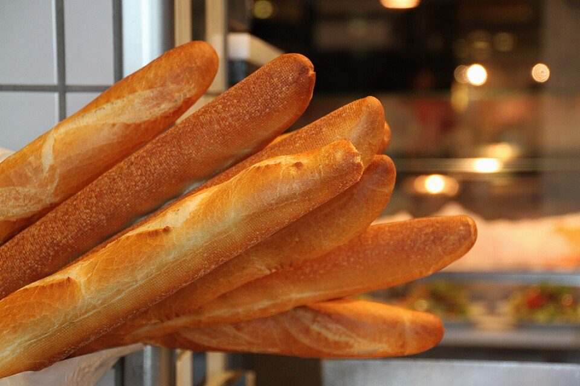

制作側の連想
造粒機の部位を、配置図にしてみる
このサイトは、粉を粒にそろえる機械「造粒機」のうち、傾いた皿が回るタイプを図にしたつもりで作りました。六つの部位に番号をふり、上の図と並べています。制作側の連想で、お店の理念・由来とは無関係です。実際の機械の仕様や構造を示すものでもありません。
凡例
六つの部位
- 1ホッパー粉の原料を入れる、上の受け口。
- 2回転皿傾いたまま回りながら、粉を丸い粒に育てる皿。
- 3スクレーパー皿の面にたまった粉をかき落とす板。
- 4噴霧ノズル粉へ少しずつ液体を吹きかける口。
- 5駆動モーター皿を回す力をつくる部分。
- 6傾斜角調整ハンドル皿の傾きを回して変えるための輪。
ギャラリー(イメージ)
パンとコーヒーの写真


写真はパンとコーヒーのイメージです。お店のものではなく、お店で提供している商品を示すものでもありません。
ご案内
お店のこと(確認できたものだけ)
| 所在地 | 〒981-1203 宮城県名取市閖上1丁目 中央1丁目28-6 |
|---|---|
| 電話 | 準備中 |
| 営業時間 | 準備中 |
| 定休日 | 準備中 |
| ご予約 | 準備中 |
| 駐車場 | 準備中 |
| SNS | Instagram @panya_kotetu |